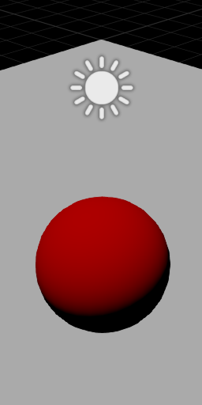
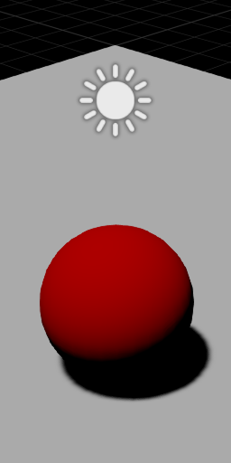
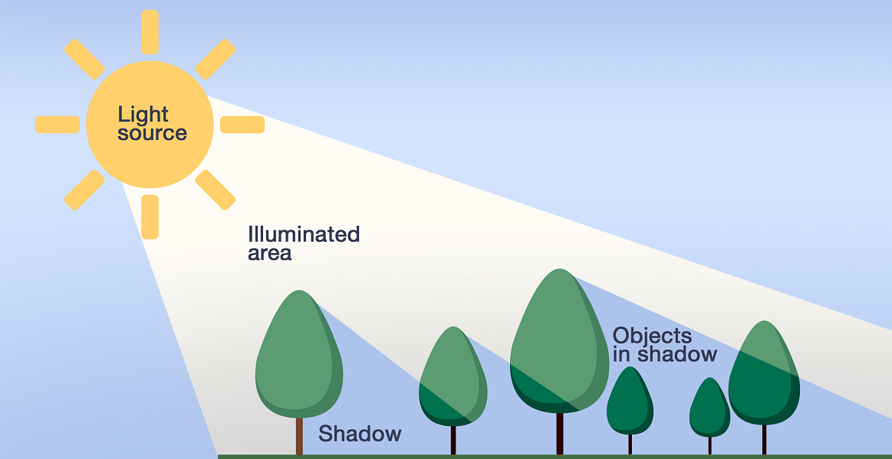
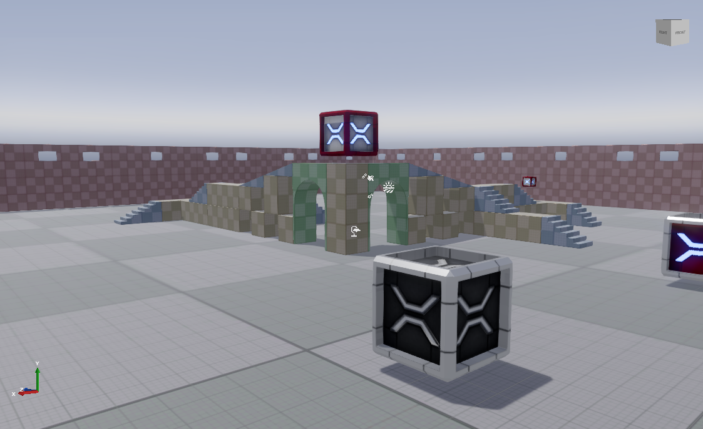
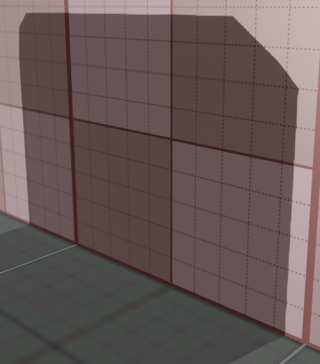
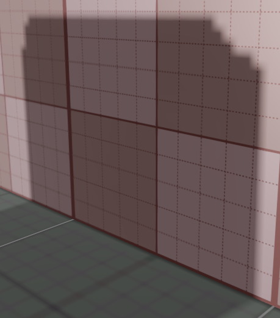
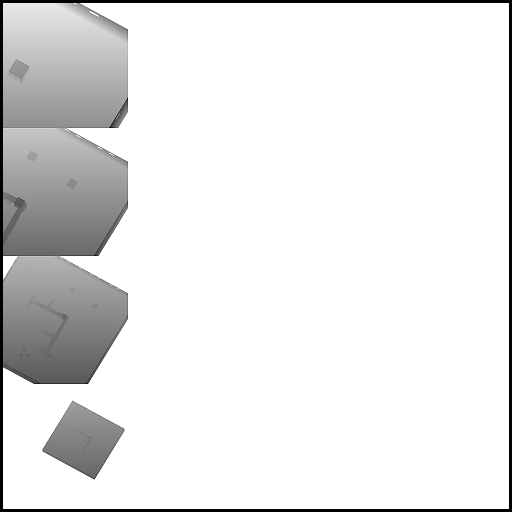

Shadows
Beginner Designer Artist
Shadows bring significant information and realism to a scene.
| Shadows off | Shadows on |
|---|---|
|  |  |
Only directional lights, point lights, and spot lights can cast shadows.
Shadow maps
Stride uses shadow mapping to render shadows. To understand shadow maps, imagine a camera in the center of the sun, so you're looking down from the sun's perspective.

Everything the sun sees is in light. Everything hidden from the sun (ie behind occluders) is in shadow.
From this perspective, Stride creates a shadow map for each light that casts shadows. This tells us how far each visible pixel is from the light. When Stride renders the scene, it checks the position of each pixel in the shadow map to learn if it can be "seen" by the light. If the light can see the pixel, the light is illuminated. If it can't, the pixel is in shadow.
For example, these are shadow maps from the first-person shooter sample included in Stride, generated by a directional light.


Note
Note that the directional light in the example above creates four shadow maps, one for each cascade. For more information, see the Directional lights page.
The shadow atlas
Shadow maps for each light that casts a shadow are saved in a region of the shadow atlas texture. You can choose how much of the shadow atlas each light uses. The larger the shadow map, the better the shadow quality, but the less space you have for shadow maps from other light sources.
| Higher-quality shadow (uses a large area of the shadow atlas) | Lower-quality shadow (uses a smaller area of the shadow atlas) |
|---|---|
|  |  |
|
 |
Generally, you should give more space to light sources that cast the most visible shadows.
The size of each area in the shadow map depends on several factors:
- the
shadowMapSizeFactorbased on theLightShadowMap.Sizeproperty (/8, /4, /2, x1, or x2) - the projected size of the light in screenspace (
lightSize)- for directional lights, the lightSize is equal to the max (screenWidth, screenHeight)
- for spot lights, the lightSize is equal to the projection of the projected sphere at the target spot light cone
- the
ShadowMapBaseSizeequals1024
The final size of the shadow map is calculated like this:
// Calculate the size factor
var shadowMapSizeFinalFactor = shadowImportanceFactor * shadowMapSizeFactor;
// Multiply the light projected size by the size factor
var shadowMapSize = NextPowerOfTwo(lightSize * shadowSizeFinalFactor);
// Clamp to a maximum size
shadowMapSize = min(shadowMapSize, ShadowMapBaseSize * shadowSizeFinalFactor);
If you've enabled shadows on a light in your scene, but it isn't casting shadows, make sure there's enough space in the shadow atlas to create a shadow map for the light. For more information, see Troubleshooting — Lights don't cast shadows.